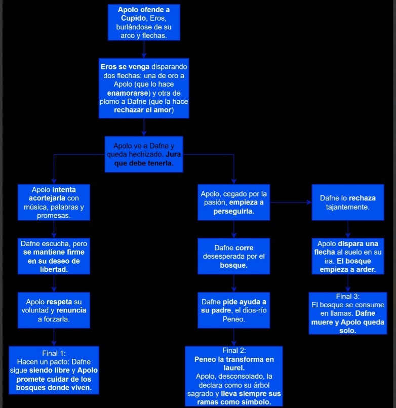

Daphne & Apollo
Una relectura interactiva del mito clásico, donde las elecciones alteran el destino.
Página web de Fio
Temática del proyecto
La aventura recrea el mito de Dafne y Apolo: un dios consumido por un amor artificial impuesto por Eros, y una ninfa atravesada por el rechazo provocado por la flecha negra. La obra propone una lectura más contemporánea, donde la libertad, los límites y el consentimiento cobran protagonismo.
Relectura del mito
El proyecto resignifica el cuento clásico, destacando la decisión de Dafne de no corresponder un deseo que no siente. Su voluntad es el centro del conflicto.
Interactividad
A través de decisiones ramificadas, el jugador acompaña a Apolo: respetar, entender, escuchar… o insistir en una persecución que nunca debió comenzar.
Proceso de producción
En nuestra comisión, teníamos que hacer una aventura gráfica en base a un mito griego, terminamos eligiendo el mito de Dafne y Apolo que narra un amor no correspondido y una transformación trágica. Apolo, dios de las artes, la música y el sol, se burló de Eros (Cupido), el dios del amor, por su juventud y su arco y flechas, lo que provocó su venganza.
Eros, ofendido, disparó dos flechas: una de oro que causaba amor inmediato y otra de plomo que provocaba rechazo absoluto.
La flecha de oro hirió a Apolo, quien se enamoró perdidamente de Dafne, una ninfa de los bosques que había jurado permanecer virgen y seguir los caminos de Artemisa.
En cambio, la flecha de plomo alcanzó a Dafne, quien lo odió y huyó de él.
Lo primero que hicimos después de elegir el mito, fue hacernos un mapa con todos los acontecimientos y decisiones que iban a ocurrir en el juego. Siendo la línea central la historia original y tomando bifurcaciones a partir de esa base.
Para los personajes queríamos que se vean con un estilo más anime o simplificado.
Para hacer a Apolo nos basamos en sus descripciones en distintos mitos, siendo un hombre muy apuesto de cabello largo, sin barba y su típica corona de laurel.
Con Dafne nos tomamos la libertad de hacerla como nos parecía mejor, ya que en el mito no se la describe físicamente más allá de decir que era hermosa.


Para el tratamiento de imágenes usamos una estética general basada en el anime, con globos de texto que contienen una breve representación del texto narrativo que pusimos en la parte inferior de todas las imágenes. Además decidimos poner botones medio futuristas/neones de color azul con una tipografía blanca que contraste, buscando una estética de interfaz digital.
En nuestro código organizamos todo el funcionamiento del juego usando varias estructuras y funciones clave. Primero, definimos variables globales para guardar la pantalla actual, la música, los efectos de sonido y todas las imágenes que usamos, lo cual nos permite controlar el flujo del juego desde cualquier parte del programa.
En la función preload() cargamos todos los recursos que necesitábamos antes de que el juego comenzara: la canción de fondo, el sonido de clic y las 16 imágenes que representan cada pantalla de la historia. Eso asegura que todo esté listo antes de empezar.
Luego, en setup(), configuramos el tamaño del lienzo y definimos que el juego inicia en la pantalla 0.
La función draw() es el corazón del programa. Ahí establecimos el fondo y configuramos qué debe mostrarse según el valor de la variable pantalla. Cada pantalla muestra una imagen correspondiente y, aunque desactivamos los rectángulos guía, dejamos preparada la estructura para visualizar las zonas clickeables si fuese necesario.
Usamos la función mousePressed() para detectar cuándo el jugador hace clic y, según la posición del mouse y la pantalla actual, decidimos qué acción tomar: avanzar la historia, elegir entre dos opciones, volver al inicio o abrir los créditos. También ahí controlamos la lógica para reproducir, pausar o reiniciar la música.
Además, creamos funciones auxiliares para mostrar círculos o rectángulos que representan áreas donde habría botones, lo que nos ayuda a visualizar y organizar mejor la interfaz.
Finalmente, estructuramos toda la navegación del juego mediante un sistema de pantallas enlazadas.
A la hora de probar la aventura, se nos dificultaba el momento de colocar el sonido, no sabíamos por qué no se reproducía y en ningún lado nos saltaba un error, miramos varias veces el video explicativo del profesor David hasta que nos dimos cuenta que no habíamos incluido la librería de sonido de p5js.
Equipo creativo

Fiorella Celi
Hola, soy Fiorella Celi y me encantan los animales; convivo con dos gatos, dos perros y una tortuga que hacen mi vida más divertida. Disfruto muchísimo de los videojuegos, especialmente Red Dead Redemption 2, mi favorito por su ambientación y sus personajes. También me gusta pintar, una actividad que me permite relajarme y expresar mi creatividad.

Oriana Betsabé Capurro
Hola, soy Oriana Capurro. Me encantan las películas de horror y el anime. También voy al gimnasio de forma regular, tanto por rutina como para despejarme. Además disfruto dibujar y crear cosas, es una de mis formas favoritas de expresarme.
Aventura gráfica
A continuación podés jugar la aventura completa: música, decisiones y múltiples finales según tus elecciones.
(Originalmente no habíamos pensado en la estética al ponerle fondo verde al juego, por eso ahora lo cambié a celeste.)